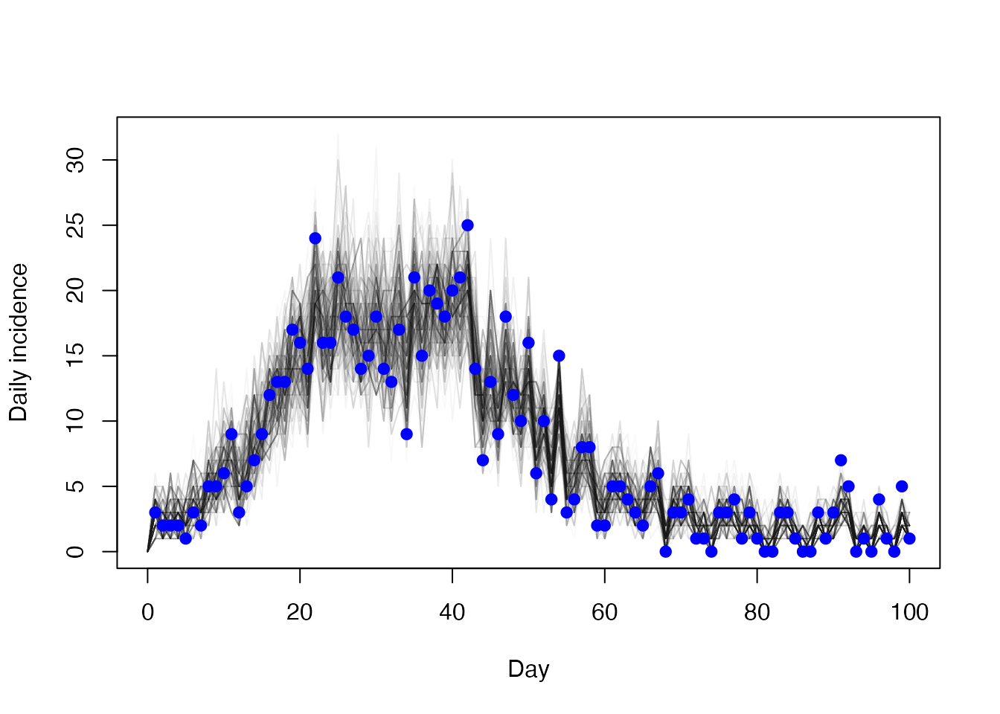
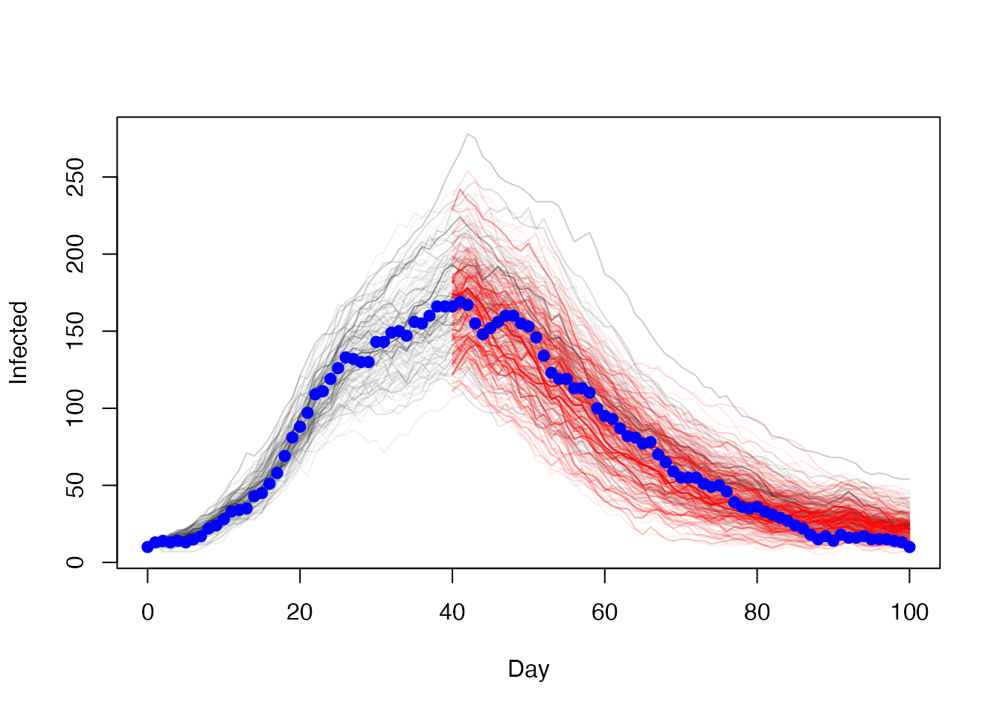

We are experimenting with an ability to “restart” the simulation at a point in time based on the outcome of a MCMC run. The motivating reason to do this is in our sircovid model where run an epidemiological model with a number of time varying parameters corresponding to interventions which leads to a number of “waves” of infections. We want to be able to restart the simulation from the trough between two waves so that we can avoid refitting the first peak and better capture changes in parameters as the epidemic unfolds.
To illustrate this problem and the solution we will use a much simpler model which does not show recurrent waves of infection, so we will contrive points to restart. This example picks up from the vignette("sir_models") vignette.
Setup
incidence <- read.csv(system.file("sir_incidence.csv", package = "mcstate"))
plot(cases ~ day, incidence,
type = "o", xlab = "Day", ylab = "New cases", pch = 19)
history <- readRDS("sir_true_history.rds")
history <- t(drop(history))
colnames(history) <- c("S", "I", "R", "cases")
history <- data.frame(t = seq_len(nrow(history)) - 1L, history)
matplot(history$t, history[c("S", "I", "R")], type = "l", lty = 1,
xlab = "Day", ylab = "Variable")
sir <- dust::dust_example("sir")
dt <- 0.25
data <- mcstate::particle_filter_data(incidence, time = "day", rate = 1 / dt)A comparison function
compare <- function(state, observed, pars = NULL) {
if (is.na(observed$cases)) {
return(NULL)
}
exp_noise <- 1e6
incidence_modelled <- state[1, , drop = TRUE]
incidence_observed <- observed$cases
lambda <- incidence_modelled +
rexp(n = length(incidence_modelled), rate = exp_noise)
dpois(x = incidence_observed, lambda = lambda, log = TRUE)
}An index function for filtering the run state
index <- function(info) {
list(run = 5L, state = 1:5)
}Parameter information for the pMCMC, including a roughly tuned kernel so that we get adequate mixing
proposal_kernel <- rbind(c(0.00057, 0.00034), c(0.00034, 0.00026))
pars <- mcstate::pmcmc_parameters$new(
list(mcstate::pmcmc_parameter("beta", 0.2, min = 0, max = 1,
prior = function(p) log(1e-10)),
mcstate::pmcmc_parameter("gamma", 0.1, min = 0, max = 1,
prior = function(p) log(1e-10))),
proposal = proposal_kernel)All-in-one
Run a pMCMC with 100 particles for the full length of the data. This means that we are fitting to the entire series.
n_particles <- 100
p1 <- mcstate::particle_filter$new(data, sir, n_particles, compare,
index = index,
n_threads = dust::dust_openmp_threads())
control1 <- mcstate::pmcmc_control(500, save_trajectories = TRUE,
save_state = TRUE, save_restart = 40)
res1 <- mcstate::pmcmc(pars, p1, control = control1)Here’s the trajectories showing the number of people infected
t <- 0:100
matplot(t, t(res1$trajectories$state[2, , ]), type = "l", lty = 1,
col = "#00000011", xlab = "Day", ylab = "Infected")
points(I ~ t, history, pch = 19, col = "blue")
And the daily incidence
matplot(t[-1], diff(t(res1$trajectories$state[5, , ])), type = "l",
lty = 1, col = "#00000005", xlab = "Day", ylab = "Daily incidence")
points(cases ~ day, incidence, col = "blue", pch = 19)
Restarting
In the mcstate::pmcmc_control call above we added save_restart = 40; this means that we save the entire internal state of a single particle at time step 40 (this is the “day” time, not the model step).
The restart state is a 3d array with dimensions corresponding to (1) model state, (2) MCMC sample, (3) restart time (a vector of times can be provided to save_restart but here just one time was returned).
dim(res1$restart$state)
#> [1] 5 501 1This sample includes variablility over the pmcmc run:
hist(res1$restart$state[2, , ], xlab = "Number infected",
main = "Distribution of number infected over mcmc samples")
This matrix includes all information to restart the stochastic process and we can use this to run a pmcmc that starts the particle filter that runs over data starting from day 40. Note that this is not the same model as it does fit to the first 40 days of the epidemic so we expect parameters to differ (it’s a bit like allowing a break in parameters at day = 40 except our initial parameter sets here do include both parts.
The key part is to create an initial function for the particle function that will create suitable initial conditions. We do this by sampling n_particles worth of particles out of this matrix. (The initial function must conform to mcstate’s interface so we accept info and pars here even though we ignore them)
s <- res1$restart$state[, , 1]
initial <- function(info, n_particles, pars) {
list(state = s[, sample.int(ncol(s), n_particles, replace = TRUE)])
}Then subset the data that we will fit to and create a new particle filter
data2 <- data[data$day_start >= 40, ]
p2 <- mcstate::particle_filter$new(data2, sir, n_particles, compare,
index = index, initial = initial,
n_threads = dust::dust_openmp_threads())And run a pMCMC that fits parmeters to the second half of the epidemic
control2 <- mcstate::pmcmc_control(500, save_trajectories = TRUE,
save_state = TRUE)
res2 <- mcstate::pmcmc(pars, p2, control = control2)Plot of the number of people infected over time with the overall model (black) and the restarted model (red) with observed data (blue)
t <- 0:100
t2 <- 40:100
matplot(t, t(res1$trajectories$state[2, , ]), type = "l", lty = 1,
col = "#00000005", xlab = "Day", ylab = "Infected")
matlines(t2, t(res2$trajectories$state[2, , ]), lty = 1,
col = "#ff000011")
points(I ~ t, history, pch = 19, col = "blue")
Daily incidence, which is what the model actually fits to
matplot(t[-1], diff(t(res1$trajectories$state[4, , ])), type = "l",
lty = 1, col = "#00000002", xlab = "Day", ylab = "Daily incidence")
matlines(t2[-1], diff(t(res2$trajectories$state[4, , ])),
lty = 1, col = "#ff000005")
points(cases ~ day, incidence, col = "blue", pch = 19)
The parameter estimates, which are a similar but not identical distribution
plot(res1$pars,
xlim = range(res1$pars[, 1], res2$pars[, 1]),
ylim = range(res1$pars[, 2], res2$pars[, 2]), pch = 19,
col = "#0000ff55")
points(res2$pars, col = "#ff000055", pch = 19)